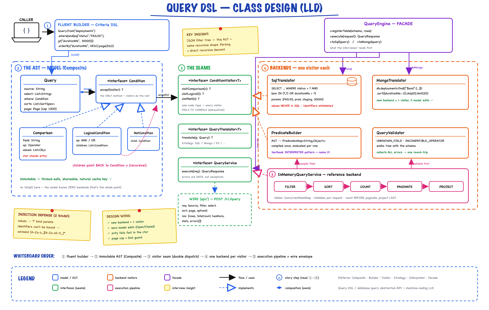
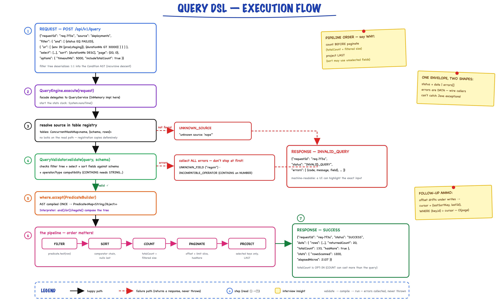

Query DSL // Database Query Abstraction API
Backend-neutral query DSL: a fluent builder produces an immutable Condition AST (Composite); Visitor translators render it to parameterized SQL or Mongo, or interpret it in-memory — behind a request/response wire API whose JSON filter tree mirrors the AST exactly. Sourced from a real machine-coding round.
01 — Requirements
Read the question first. "Write a database queries abstraction API/DSL + request/response schema" hides two deliverables: (1) a library — the fluent DSL producing an immutable query AST; (2) a service contract — the JSON envelopes if exposed over the wire. The unlock: the JSON filter schema and the in-memory AST are the same recursive shape — one design, two representations.
Functional (v1)
- Build a query — source, projection, filter tree (AND/OR/NOT over field-op-value leaves), multi-key sort, pagination
- Operators — EQ, NEQ, GT/GTE/LT/LTE, IN/NOT_IN, CONTAINS, STARTS_WITH, BETWEEN, IS_NULL/IS_NOT_NULL
- Translate the same query to ≥2 backends; execute one end-to-end (in-memory reference)
- Validate — operator arity, unknown source/fields, operator/type compatibility
- Wire API — request/response envelopes with machine-readable errors
Non-Functional
- Injection-safe SQL generation — the #1 probe for this problem
- Extensible — new operator or backend without touching existing code (Open/Closed)
- Thread-safe by construction — immutable queries, stateless executors
- Abuse-resistant — page-size cap, optional totalCount, timeout budget
Clarifying questions to ask first
- Read-only, or writes too? (writes change everything → scope reads, Command hierarchy later)
- Filter/project/sort/page only, or aggregations/joins? (aggs designed-for, joins descoped)
- One backend or pluggable? ("abstraction" in the title ⇒ pluggable)
- Type-safe fields or strings + schema validation? (wire API forces strings anyway)
02 — Core Entities
| Class | Layer | What it does internally |
|---|---|---|
| Condition | model | Composite interface; single method accept(visitor) |
| Comparison | model | Leaf: field + Operator + values; arity validated in constructor |
| LogicalCondition / NotCondition | model | AND/OR over children / negation |
| Operator | model | Enum carrying min/max operand counts → arity checked once, centrally |
| Criteria | model | Static factories — the vocabulary users type: eq, gt, in, and, or, not… |
| Query + Builder | model | Immutable aggregate: source/select/where/sorts/page; fluent builder |
| Page / SortSpec | model | Offset+limit with MAX_LIMIT cap; field+direction |
| TableSchema | model | Field→type map for semantic validation |
| QueryRequest / QueryResponse / QueryError | api | Wire envelopes; errors are a LIST (report everything at once) |
| ConditionVisitor<T> | service | Visitor over the AST — one impl per backend concern |
| QueryTranslator<T> / QueryService | service | Strategy seams: translate vs execute |
| SqlTranslator → SqlStatement | impl | AST → SELECT … WHERE … ? + ordered bind list; identifier whitelist |
| MongoTranslator | impl | AST → Mongo find command; the Open/Closed existence proof |
| PredicateBuilder | impl | AST → Predicate<Map> (Interpreter role) |
| QueryValidator | impl | Schema-aware walk collecting ALL errors |
| InMemoryQueryService | impl | filter → sort → count → paginate → project; ConcurrentHashMap registry |
| QueryEngine | root | Facade: register / execute / toSql / toMongo |
03 — Design Patterns (with rejected alternatives)
Composite — the filter tree
Boolean filters are inherently recursive: (A OR B) AND C. A Condition is a leaf Comparison or an AND/OR/NOT combinator. Rejected: a flat list of AND-ed conditions — cannot express nested OR.
Visitor — the load-bearing pattern
Backends walk the AST via ConditionVisitor<T>; the model has ZERO rendering logic. Rejected: toSql() on nodes (couples model to every backend forever) and instanceof chains (no compile-time exhaustiveness — a new node type silently breaks backends; with Visitor it fails compilation in every visitor until handled).
Builder + static factories
Query.from("t").select(…).where(…).build() constructs an immutable AST. Bonus: between(f, lo, hi)'s signature makes wrong-arity BETWEEN unrepresentable in the fluent path.
Strategy — pluggable backends
QueryTranslator<T> (SQL, Mongo) and QueryService (in-memory, someday JDBC) vary independently of the AST. Adding Elasticsearch = one new visitor, zero model edits.
Interpreter — name it out loud
The in-memory backend evaluates the AST per row (PredicateBuilder). This whole problem is the Interpreter pattern's canonical use case — saying so is senior signal.
04 — Class Diagram

The full picture: Condition Composite tree (Comparison / LogicalCondition / NotCondition) → Query aggregate → four ConditionVisitor implementations (SqlTranslator, MongoTranslator, PredicateBuilder, QueryValidator) → QueryService / QueryEngine facade. This is the whiteboard diagram at minute ~10.
Read the diagram left to right in the room: the model (Condition tree + Query) knows nothing; four visitors each own one concern (render SQL, render Mongo, evaluate, validate); the service seams (QueryService/QueryTranslator) make backends swappable; QueryEngine is the facade an interviewer reads first.
05 — Request / Response Schema (deliverable #2)
The filter tree below is the Condition AST in JSON: a node is either {field, op, value|values} or {and|or|not: …}. Deserialization is direct recursive descent — no impedance mismatch between wire and memory.
Request — POST /api/v1/query
{
"requestId": "req-7f3a",
"source": "deployments",
"select": ["id", "service", "status", "durationMs"],
"filter": {
"and": [
{ "field": "status", "op": "EQ", "value": "FAILED" },
{ "or": [
{ "field": "env", "op": "IN", "values": ["prod", "staging"] },
{ "field": "durationMs", "op": "GT", "value": 30000 }
]}
]
},
"sort": [ { "field": "durationMs", "direction": "DESC" } ],
"page": { "limit": 20, "offset": 0 },
"options": { "timeoutMs": 5000, "includeTotalCount": true }
}
Success response
{
"requestId": "req-7f3a",
"status": "SUCCESS",
"data": {
"rows": [ { "id": "d2", "service": "pipeline-svc", "status": "FAILED", "durationMs": 45000 } ],
"returnedCount": 20,
"totalCount": 133,
"hasMore": true
},
"stats": { "rowsScanned": 1200, "elapsedMicros": 2107 }
}
Validation-failure response — ALL errors in one round-trip
{
"requestId": "req-7f3a",
"status": "INVALID_QUERY",
"errors": [
{ "code": "UNKNOWN_FIELD", "message": "unknown field in filter: 'regoin'", "field": "regoin" },
{ "code": "INCOMPATIBLE_OPERATOR", "message": "CONTAINS not applicable to NUMBER 'durationMs'", "field": "durationMs" }
]
}
Schema decisions to narrate
- value vs values — mirrors operator arity; server re-validates (never trust the client)
- requestId — correlation for logs / tracing / idempotent retries
- totalCount opt-in — COUNT(*) can cost more than the query itself
- errors: list + code + field — a UI can highlight the exact offending input
- /api/v1/ — additive evolution (new optional fields, new operators) stays backward-compatible; unknown request fields rejected (fail loud)
- offset now, cursor later — named upgrade path (see Q&A)
06 — SQL Translation & Injection Defense
Two different mechanisms — know the difference cold: VALUES become bind parameters (they never enter the SQL string). IDENTIFIERS (table/field names) cannot be parameterized in SQL, so they pass a strict whitelist [A-Za-z_][A-Za-z0-9_]* or the query is rejected.
The visitor emits placeholders, collects params in order
public String visitComparison(Comparison c) { requireIdentifier(c.field()); // defense #2: whitelist switch (c.op()) { case EQ: case NEQ: case GT: case GTE: case LT: case LTE: params.add(c.singleValue()); // defense #1: bind, don't splice return c.field() + " " + c.op().symbol() + " ?"; case IN: /* field IN (?, ?, ?) — one ? per value */ case BETWEEN: /* field BETWEEN ? AND ? */ case CONTAINS: params.add("%" + c.singleValue() + "%"); return c.field() + " LIKE ?"; ... } }
Proof from the demo
// query: eq("service", "x' OR '1'='1") SELECT * FROM deployments WHERE service = ? LIMIT ? OFFSET ? -- params: [x' OR '1'='1, 100, 0] // malicious text is bind-value #1; in-memory backend matches 0 rows (treated literally)
Output for the nested demo query
SELECT id, service, env, durationMs FROM deployments WHERE (status = ? AND (env IN (?, ?) OR durationMs > ?)) ORDER BY durationMs DESC LIMIT ? OFFSET ? -- params: [FAILED, prod, staging, 30000, 5, 0]
07 — Execution Flow

Execution flow: request → resolve source → schema validation (branch: INVALID_QUERY + all errors at once) → PredicateBuilder compiles the AST → filter → sort → count → paginate → project → response envelope.
Pipeline order matters — say why
filter → sort → count → paginate → project. Count before pagination (totalCount is the filtered size, not the page size); projection last so sorting can use fields the caller didn't select.
08 — Two Validation Layers
Syntactic — fail fast at construction
Operator arity lives ON the enum (BETWEEN: min=2, max=2) and is checked in the Comparison constructor: new Comparison("age", BETWEEN, [5]) throws before a request even exists. Page bounds (1 ≤ limit ≤ 1000) same story.
Semantic — schema-aware at execution
Unknown field, CONTAINS on a NUMBER — these need the TableSchema, so a validation visitor walks the tree at execute time and collects every error (not just the first) into the response.
Operator/type compatibility matrix
| Operator | STRING | NUMBER | BOOLEAN |
|---|---|---|---|
| EQ / NEQ / IN / NOT_IN / IS_NULL | ✓ | ✓ | ✓ |
| GT / GTE / LT / LTE / BETWEEN | ✓ (lexicographic) | ✓ | ✗ |
| CONTAINS / STARTS_WITH | ✓ | ✗ | ✗ |
09 — Evaluation Semantics & Data Structures
Semantics decisions — state them, don't leave them implicit
- Comparison against a missing/null field is false (SQL-like) — except IS_NULL
- Numeric equality is cross-type:
Integer 5 == Long 5viadoubleValue() - BETWEEN inclusive on both ends; CONTAINS / STARTS_WITH case-sensitive
- Sort: nulls last; incomparable pairs treated as equal
Data structures
| Need | Choice | Why |
|---|---|---|
| Table registry | ConcurrentHashMap<String, Table> | concurrent registration + lookup, no locking in execute() |
| Rows | List<Map<String,Object>>, unmodifiable copies | schema is dynamic by design; defensive copy at registration |
| Filter evaluation | java.util.function.Predicate composed via and/or/negate | the AST compiles once, evaluates per row |
| Bind params | ArrayList<Object> filled in visit order | placeholder order == parameter order by construction |
Thread-safety story (one sentence)
Queries are immutable (shareable, reusable, loggable, natural cache keys), executors are stateless per request, and the only mutable state — the table registry — is a ConcurrentHashMap: concurrent execute() calls need zero locking.
10 — Interview Q&A (the 90-min round lives here)
| Follow-up | Answer |
|---|---|
| Add aggregations? | Add groupBy: [fields] + aggregates: [{fn, field, alias}] to Query and the JSON. In-memory: group phase between filter and sort; SQL: render GROUP BY. AST/visitors unchanged. |
| Joins? | Descope deliberately — joins turn a DSL into a full query language (aliases, join graphs, ambiguity). Offer: denormalized views registered as sources, or a Mongo-style lookup stage. Knowing why not is the senior answer. |
| New backend (Elasticsearch)? | One new ConditionVisitor: leaves → term/range queries, AND/OR → bool must/should. Zero model changes — MongoTranslator (~100 lines) is the existence proof. |
| Cursor pagination? | Offset is O(offset) per page and drifts under concurrent writes. Cursor = opaque token of last-seen sort-key values; WHERE (sortKey, id) > (cursor…); response returns nextCursor. Requires a total order ⇒ always append id as tiebreak sort key. |
| Query cost / abuse? | Already: page cap + opt-in COUNT. Next: max predicate depth/leaf count, per-caller rate limits, timeout budget enforced by a bounded executor. |
| Caching? | Immutable Query + deterministic rendering ⇒ the rendered SQL/params is a natural cache key; invalidate per-source on write. |
| Writes? | Separate Command hierarchy (Insert/Update reusing the same Condition AST for WHERE) — never bolted onto Query: reads are cacheable/idempotent, writes aren't. |
| Type-safe DSL? | Field<T> constants (AGE.gt(30)) give compile-time checks for Java callers; keep strings on the wire. Trade-off: registry/codegen maintenance vs earlier errors. |
| Why not just accept SQL strings? | Then the "abstraction" is gone: no backend portability, no schema validation, injection surface everywhere, and callers couple to one dialect. The AST is the product. |
11 — 90-Minute Pacing
| Time | Do |
|---|---|
| 0–7 | Clarify scope, state assumptions aloud, agree v1 with interviewer |
| 7–15 | Whiteboard AST + the two seams; write the request/response JSON now — it drives the model |
| 15–35 | model/: Operator (arity!), Condition tree, Criteria, Query+Builder |
| 35–55 | In-memory backend end-to-end + demo main RUNNING |
| 55–70 | SqlTranslator — narrate the injection defense while typing |
| 70–80 | Validation (all-errors-at-once) + wire envelopes |
| 80–90 | Their injected follow-up (aggregations / cursor / new backend) + tests if time |
If time collapses: cut Mongo, cut CONTAINS/STARTS_WITH/BETWEEN (keep EQ/GT/IN) — never cut the runnable demo or the parameterized-SQL point.
12 — Package Structure
querydsl/ ├── model/ -- the AST: pure structure, zero backend knowledge │ ├── Condition -- Composite root: leaf | AND/OR | NOT │ ├── Comparison -- field <op> value(s); arity checked at build │ ├── LogicalCondition, NotCondition │ ├── Criteria -- static-factory DSL vocabulary │ ├── Operator -- enum + per-operator arity rules │ ├── Query (+Builder), SortSpec, Page │ └── TableSchema -- field types for semantic validation ├── api/ -- the wire contract │ ├── QueryRequest, QueryResponse, QueryError, ExecutionStats ├── service/ │ ├── ConditionVisitor<T> -- Visitor over the AST │ ├── QueryTranslator<T> -- Strategy: AST -> backend-native │ └── QueryService -- execute(request) -> response ├── service/impl/ │ ├── SqlTranslator (+SqlStatement), MongoTranslator │ ├── PredicateBuilder, QueryValidator │ └── InMemoryQueryService ├── QueryEngine.java -- facade: register / execute / toSql / toMongo └── QueryDslDemo.java -- 7 scenarios end-to-end
Run it
mvn -q compile exec:java -Dexec.mainClass="com.you.lld.problems.querydsl.QueryDslDemo" mvn -q test -Dtest=QueryDslTest -- 14 tests
13 — Patterns Summary
| Pattern | Where | One-line why |
|---|---|---|
| Composite | Condition tree | boolean filters are recursive: (A OR B) AND C |
| Builder | Query.Builder / Criteria | fluent construction of an immutable AST; bad arity unrepresentable |
| Visitor | ConditionVisitor<T> | backends walk the AST; new backend = new class, zero model edits |
| Strategy | QueryTranslator / QueryService | SQL vs Mongo vs in-memory behind one contract |
| Interpreter | PredicateBuilder | the in-memory backend evaluates the AST per row |
| Facade | QueryEngine | one entry point: register / execute / translate |
26 files · 4 visitors · 2 translators + 1 interpreter · the JSON schema IS the AST